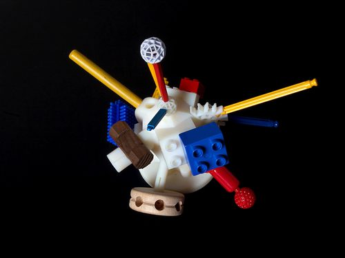
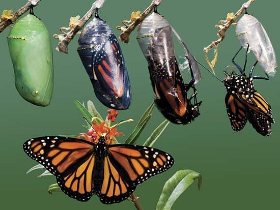

Data Warehousing and Record Linkage Concepts
Jeremy Stephens
Vanderbilt University
Department of Biostatistics
October 23, 2013
Your Data

Someone Else's Data

Cleaning data by hand

Data warehousing


Decision making

Terms
| Business | Statistics |
|---|---|
| Fact | Measurement |
| Dimension | Label |
| Slicing | Subsetting |
| Dicing | Grouping |

Extract, Transform, and Load
Extract
Pulling data from one or more data sources.
Transform
Cleaning, converting, and merging data.
Load
Put the data into its final structure.
Simplistic example
| my-data.csv |
|---|
| id,name,dob 1,George Jetson,2022-05-12 2,Jane Jetson,2029-01-23 3,Judy Jetson,2047-10-05 |
| their-data.csv |
|---|
| id,firstname,lastname,height,weight 4,George,Jetson,70,185 5,Jane,Jetson,65,140 6,Judy,Jetson,58,115 |
Begin extraction phase!
Read in my data
> x <- read.csv('my-data.csv',
+ as.is = TRUE)
> x
id name dob
1 1 George Jetson 2022-05-12
2 2 Jane Jetson 2029-01-23
3 3 Judy Jetson 2047-10-05
Read in their data
> y <- read.csv('their-data.csv',
+ as.is = TRUE)
> y
id firstname lastname height weight
1 4 George Jetson 70 185
2 5 Jane Jetson 65 140
3 6 Judy Jetson 58 115
Extraction phase complete.
Transformation phase
Split up full name
> name.split <- strsplit(x$name, " ") > x$firstname <- sapply(name.split, + function(v) v[1]) > x$lastname <- sapply(name.split, + function(v) v[2])
Merge datasets
> dataset <- merge(x, y,
+ by = c("firstname", "lastname"))
> dataset
firstname lastname id.x name
1 George Jetson 1 George Jetson
2 Jane Jetson 2 Jane Jetson
3 Judy Jetson 3 Judy Jetson
dob id.y height weight
1 2022-05-12 4 70 185
2 2029-01-23 5 65 140
3 2047-10-05 6 58 115
Select fields
> fields <- c("firstname", "lastname",
+ "dob", "height", "weight")
> dataset <- dataset[, fields]
Calculate age
> now <- as.Date("2062-10-23")
> dob.date <- as.Date(dataset$dob)
> age.days <- as.numeric(
+ difftime(now, dob.date))
> dataset$age <- age.days %/% 365.25
Final dataset
> dataset firstname lastname dob height 1 George Jetson 2022-05-12 70 2 Jane Jetson 2029-01-23 65 3 Judy Jetson 2047-10-05 58 weight age 1 185 40 2 140 33 3 115 15
Load phase
Save the dataset
> save(dataset, file="dataset.Rdata")
That's it!
If only it were that easy.
Malformed data
id,name,dob, 1,"George" Jetson,2022-05-12 2,Jane Jetson,2029-01-23,, 3,"Judy Jetson,2047-10-05,
Disparate sources and different destinations
- Databases
- Web services (i.e. REDCap)
- Flat files in different formats
What do you do?
How it works
Universal adapter
Transformations
Transformations (cont.)
- Convert data types
- Merge datasets
- Rename/filter fields
- Custom per-row code execution
Caution
Principle of least surprise
> x <- read.csv("my-data.csv")
> str(x)
'data.frame': 3 obs. of 3 variables:
$ id : int 1 2 3
$ name: Factor w/ 3 levels "George Jetson",..: 1 2 3
$ dob : Factor w/ 3 levels "2022-05-12","2029-01-23",..: 1 2 3
Ethel Example
reader = Ethel::Reader['csv'].new({
file: 'my-data.csv'
})
writer = Ethel::Writer['csv'].new({
file: 'dataset.csv'
})
m = Ethel::Migration.new(reader, writer)
Migration
Split up full name
m.add_field('firstname', 'string')
m.add_field('lastname', 'string')
m.update do |row|
row['firstname'], row['lastname'] =
row['name'].split(" ")
end
Select fields
m.select(['firstname', 'lastname', 'dob'])
Process their data
reader_2 = Ethel::Reader['csv'].new({
file: 'their-data.csv'
})
writer_2 = Ethel::Writer['memory'].new
m2 = Ethel::Migration.new(reader_2, writer_2)
Select fields
m2.select(['firstname', 'lastname',
'height', 'weight'])
m2.run
Merge datasets
reader_3 = Ethel::Reader['memory'].new({
data: writer_2.data
})
m.merge(reader_3,
['firstname', 'lastname'])
m.run
Tada!
Part of the whole
.jpg){kind=link}
{kind=link}
Why make Coupler?
Record Linkage!
What is it?
Two linkage categories
- Deterministic
- Probabilistic
Linkage algorithms
- Sound algorithms
- String distance
- Numeric comparison
Two algorithm categories
- Transforming and equality
- Comparing each record
Linkage example
parents = Linkage::Dataset.new(
'postgres://example.com/foo',
'parents')
children = Linkage::Dataset.new(
'mysql://some-other-host.net/bar',
'children')
config = parents.link_with(children) do
lhs[:first_name].must ==
rhs[:parent_first_name]
lhs[:last_name].must ==
rhs[:parent_last_name]
lhs[:last_name].must_not ==
"Smith"
save_results_in('sqlite://results.db')
end
Acknowledgements
- Richard Urbano
- Cole Beck